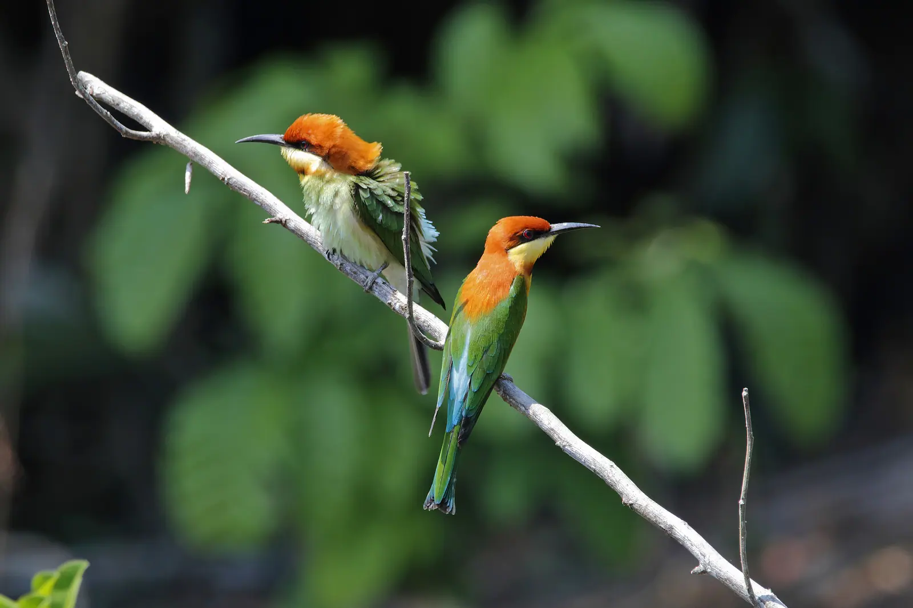

Giáo trình HSK 2 · Lesson 15我想再去一次中国
Wǒ xiǎng zài qù yí cì Zhōngguó
Tôi muốn đi Trung Quốc thêm một lần nữa
Mục tiêu bài khóa
Sau bài học, người học có thể nói về kế hoạch du lịch, sử dụng bổ ngữ động lượng và mẫu câu 有 để diễn đạt khoảng thời gian.
旅游的计划Trao đổi về kế hoạch du lịch và những việc muốn trải nghiệm.
动量补语Dùng 次 để nói số lần một hành động đã hoặc sẽ xảy ra.
“有”字句（2）Dùng 有 kết hợp khoảng thời gian để nói một trạng thái kéo dài bao lâu.
Khởi động · 热身
Chọn từ rồi chọn đúng hình ảnh tương ứng.
💡 Hãy chọn một từ trước.
Từ vựng · 生词
Mặt trước có từ, nghĩa, loại từ và nút phát/dừng. Mặt sau có hình ảnh và ví dụ theo PowerPoint.
姓名
xìngmíng
họ tên; tên
danh từChạm vùng trống để lật thẻ
请问你的姓名是什么？ 🔊Qǐngwèn nǐ de xìngmíng shì shénme?
Xin hỏi họ tên của bạn là gì? 请在纸上写下你的姓名。 🔊Qǐng zài zhǐ shàng xiě xià nǐ de xìngmíng.
Vui lòng viết họ tên của bạn lên giấy. 出国
chūguó
ra nước ngoài; xuất ngoại
động từChạm vùng trống để lật thẻ
他明年要出国。 🔊Tā míngnián yào chūguó.
Năm sau anh ấy sẽ ra nước ngoài. 我出国后，经常给家里打电话。 🔊Wǒ chūguó hòu, jīngcháng gěi jiālǐ dǎ diànhuà.
Sau khi ra nước ngoài, tôi thường gọi điện về nhà. 门票
ménpiào
vé vào cửa
danh từChạm vùng trống để lật thẻ
这是我们的门票。 🔊Zhè shì wǒmen de ménpiào.
Đây là vé vào cửa của chúng tôi. 我买了两张门票。 🔊Wǒ mǎi le liǎng zhāng ménpiào.
Tôi đã mua hai vé vào cửa. 高中
gāozhōng
cấp ba; trung học phổ thông
danh từChạm vùng trống để lật thẻ
我的高中同学在医院工作。 🔊Wǒ de gāozhōng tóngxué zài yīyuàn gōngzuò.
Bạn học cấp ba của tôi làm việc ở bệnh viện. 我明年上高中。 🔊Wǒ míngnián shàng gāozhōng.
Năm sau tôi lên cấp ba. 出门
chūmén
ra khỏi nhà; ra ngoài
động từChạm vùng trống để lật thẻ
你什么时候出门？ 🔊Nǐ shénme shíhou chūmén?
Khi nào bạn ra ngoài? 我每天早上七点出门上学。 🔊Wǒ měitiān zǎoshang qī diǎn chūmén shàngxué.
Mỗi sáng tôi ra khỏi nhà đi học lúc bảy giờ. 路
lù
đường; đường sá
danh từChạm vùng trống để lật thẻ
从这儿到学校，走路要十分钟。 🔊Cóng zhèr dào xuéxiào, zǒulù yào shí fēnzhōng.
Từ đây đến trường, đi bộ mất mười phút. 路两边有很多花。 🔊Lù liǎngbiān yǒu hěn duō huā.
Hai bên đường có rất nhiều hoa. 颐和园
Yíhé Yuán
Di Hòa Viên
danh từ riêngChạm vùng trống để lật thẻ
颐和园很漂亮。 🔊Yíhé Yuán hěn piàoliang.
Di Hòa Viên rất đẹp. 颐和园在北京。 🔊Yíhé Yuán zài Běijīng.
Di Hòa Viên ở Bắc Kinh. 机场
jīchǎng
sân bay; phi trường
danh từChạm vùng trống để lật thẻ
他已经在机场等了一个小时了。 🔊Tā yǐjīng zài jīchǎng děng le yí ge xiǎoshí le.
Anh ấy đã đợi ở sân bay một tiếng rồi. 明天我去机场送你。 🔊Míngtiān wǒ qù jīchǎng sòng nǐ.
Ngày mai tôi sẽ ra sân bay tiễn bạn. 机票
jīpiào
vé máy bay
danh từChạm vùng trống để lật thẻ
我买了一张去上海的机票。 🔊Wǒ mǎi le yì zhāng qù Shànghǎi de jīpiào.
Tôi đã mua một vé máy bay đi Thượng Hải. 你什么时候买机票？ 🔊Nǐ shénme shíhou mǎi jīpiào?
Khi nào bạn mua vé máy bay? 飞
fēi
bay
động từChạm vùng trống để lật thẻ
小鸟在天上飞。 🔊Xiǎoniǎo zài tiānshàng fēi.
Chim nhỏ đang bay trên trời. 我想坐飞机飞去北京。 🔊Wǒ xiǎng zuò fēijī fēi qù Běijīng.
Tôi muốn đi máy bay đến Bắc Kinh. 好像
hǎoxiàng
hình như; dường như; giống như
động từ / phó từChạm vùng trống để lật thẻ
她好像生病了。 🔊Tā hǎoxiàng shēngbìng le.
Cô ấy hình như bị ốm rồi. 今天好像要下雨。 🔊Jīntiān hǎoxiàng yào xiàyǔ.
Hôm nay hình như sắp mưa. 鸟
niǎo
chim; con chim
danh từChạm vùng trống để lật thẻ

天上有一只鸟。 🔊Tiānshàng yǒu yì zhī niǎo.
Trên trời có một con chim. 我喜欢小鸟。 🔊Wǒ xǐhuan xiǎoniǎo.
Tôi thích chim nhỏ. Bài khóa · 课文
Ảnh ngữ cảnh bên trái, hội thoại bên phải. Bài khóa 4 trình bày đúng dạng đoạn nhật ký.
Tương tác đóng vai
Chọn bài khóa và nhân vật. Lời của vai đã chọn sẽ được ẩn; phần này chỉ hiển thị chữ Hán.
Củng cố từ vựng
Lật đáp án từ vựng rồi hoàn thành câu hỏi đọc hiểu.
Câu hỏi đọc hiểu
Mẫu câu cần nhớ: 楼下站着一个人。她经常跑上来找我玩。我想再去一次中国！